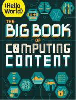
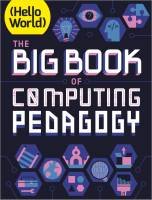

Esta página contiene enlaces a los números publicados de la revista Hello World Books en 2022 - 2021.
Página web: Libros revista Hello World

The Big Book of Comupting Content
Número 1 - 2022 octubre
Descarga (PDF 21.3 MB, inglés)

The Big Book of Comupting Pedagogy
Número 1 - 2021 septiembre
Descarga (PDF 31.1 MB, inglés)